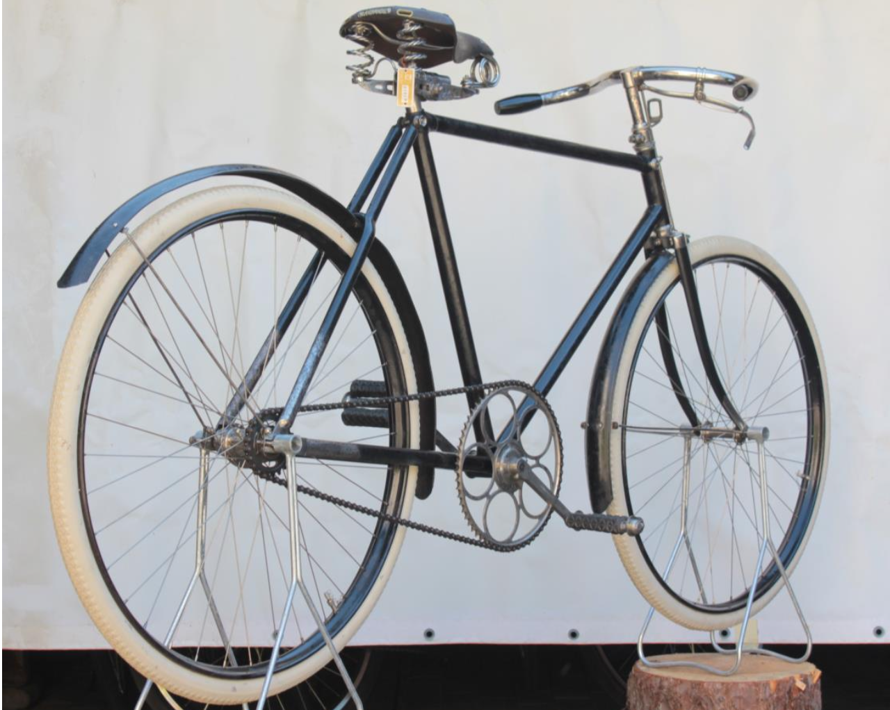
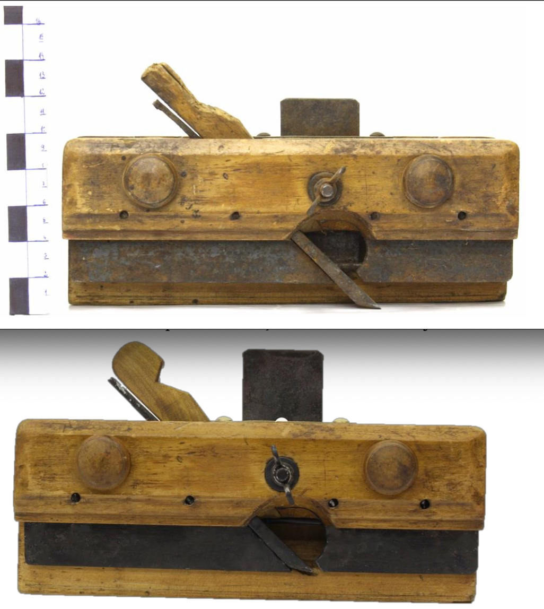

Crafting and Preserving Timber Architecture, Sculpture, and Design.
Denmark-based master craftsman Arturs Mazurs blends structural engineering with wood conservation to build and restore timber structures that stand the test of time.
Craftsmanship Over Shortcuts
Since 2016, my approach to wood has been rooted in patience, structural integrity, and deep material knowledge.
“I don't rush.”Arturs Mazurs — on method
Every project is executed with focus on detail—matching historical materials, respecting age-old construction methods, and ensuring every element feels coherent and enduring.
The Material
and the Method.
My name is Arturs Mazurs. Born in Latvia and based in Denmark, I am a craftsman and wood specialist with formal training in wood object conservation.
Working with wood since 2016, my career has been defined by a deep fascination with how timber behaves across functionality and time. Having spent years building large-scale public sculptures and restoring historical elements, I view wood not just as a construction material, but as a living medium that requires respect, precision, and an understanding of its natural limits.
I prefer to work deliberately. By diving deep into details of a project, I ensure that the final result isn't just beautiful today, but remains stable and functional for decades to come.
Patience
No rushing. The right result is found in the details, not the deadline.
Integrity
Structural soundness first—every element earns its place in the whole.
Material
Deep knowledge of species, age and behaviour guides each decision.
Permanence
Built to remain stable and functional for decades to come.
Specialised timber work, executed with precision.
Specialized wood services for businesses, expats, and intentional private clients across Sjælland and internationally.
Complex Timber Shaping & Reconstruction
Creating or replicating intricate, large-scale wood forms and structural elements. Specializing in bringing demanding artistic or architectural shapes to life with flawless execution.
Wood Restoration & Building Conservation
Restoring the structural integrity and historical beauty of architectural elements and timber objects using specialized hand tools and traditional, non-destructive methods.
Condition Diagnostics & Planning
Comprehensive technical research on timber structures. Includes wood species identification, condition mapping, and drafting professional conservation or structural restoration plans.
Design
Developing practical, intellectual design solutions for unique timber projects, commercial spaces, and artistic installations.
Local Municipalities
Artists
Festivals & Venues
Corporate Clients
Pieces that speak for themselves
Finished commissions and restorations — the work behind the names above.


Next step
Have a timber project in mind?
Tell me about the structure, the site, and the timeline. I respond personally within 24–48 business hours.
Inquire About a ProjectLet's Discuss Your Project
Based in Sjælland, available for regional and select international projects.